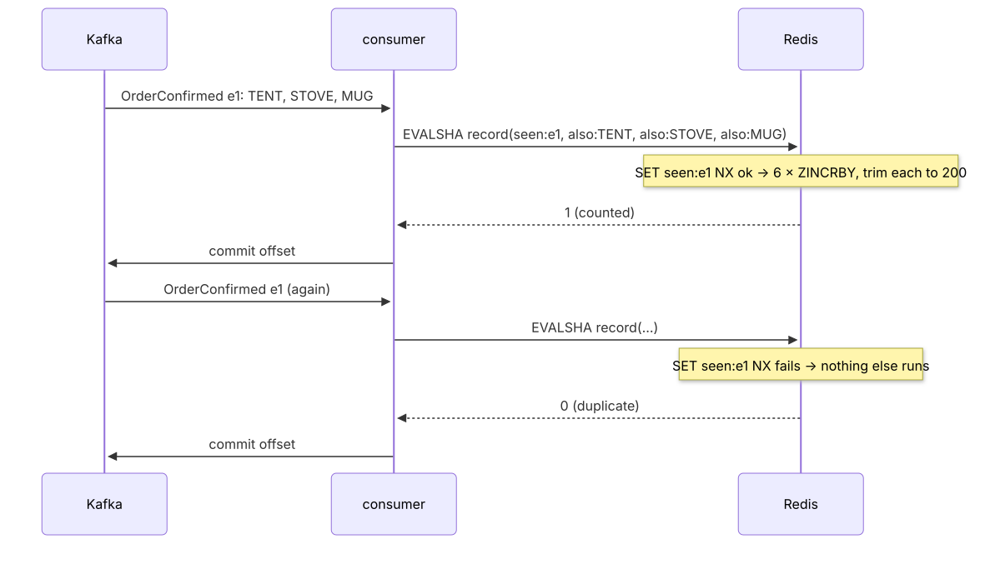
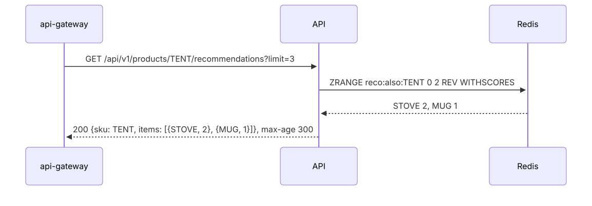

recommendation-service: low-level design#
Part of the e-commerce system design. Animated version: walkthrough.
1. Responsibilities#
| Does | Does not |
|---|---|
| Learn which products are bought together from confirmed orders | Personalise per customer (a later model can, from the same events) |
| Answer the top N partners of a product in one Redis read | Filter out-of-stock or archived products (the shop front hides them when it loads the products) |
| Count each order once, however often it is delivered | Store orders or customers |
2. Guarantees#
| Guarantee | How |
|---|---|
| Each order counts exactly once | One Lua script: SET reco:seen:<eventId> NX EX 14d, and only if that succeeds, every ZINCRBY. Redis runs a script atomically, so a duplicate (or 20 concurrent ones) changes nothing and a crash cannot leave the order half counted or marked seen without being counted |
| No order is skipped | The Kafka offset is committed after the script returns. Redis down holds the partition and retries with back-off |
| Bounded memory | Each list keeps its 200 strongest partners (ZREMRANGEBYRANK in the same script); orders count at most 50 distinct products |
| Fast reads | ZRANGE reco:also:<sku> 0 N-1 REV WITHSCORES: O(log n + N); the response is cacheable for 5 minutes |
| Optional by design | Redis down → 503 in milliseconds; the gateway's breaker and the product page treat recommendations as optional |
The script touches one key per product in the order. On a single Redis primary (with a replica and Sentinel) that is fine. In Redis Cluster the keys would need one hash tag, which puts the whole data set on one shard: at ~600 MB for 100 000 products that is acceptable, and a sharded design would count per-product with idempotent increments instead.
3. Module diagram#

4. Interaction diagram#

5. Sequences#
Learn from an order (delivered twice)#

Read#

6. Data model (Redis)#
| Key | Type | Content | Expiry |
|---|---|---|---|
reco:also:<sku> |
Sorted set | member = other SKU, score = orders containing both | None; trimmed to the top 200 at each update |
reco:seen:<eventId> |
String | 1 |
14 days (twice Kafka's retention) |
Ties are returned in Redis order: equal scores by SKU, descending.
7. Scaling and performance#
- Writes: an order with k distinct products costs k·(k−1) increments in one script; a typical order (k ≤ 5) is under 20 operations, well under a millisecond.
- Reads: one Redis round trip; 2–6 pods behind the gateway, plus a 5-minute cache at the edge and in browsers.
- Consumer: one consumer per pod in group
recommendation-service, up to the 12 partitions oforder.events.
8. Failure handling#
| Failure | Behaviour |
|---|---|
| Redis down | Reads: 503 at once. Learning: the event is retried with back-off up to 30 s; the offset waits |
| Kafka down | Reads unaffected; learning resumes from the committed offset |
| Crash mid-script | Impossible to observe half: Redis applies the whole script or none of it |
| Unreadable event | order.events.dlq with its key and headers, plus x-reason, x-original-group, -topic, -partition, -offset |
9. Tests#
| Test | Kind | Proves |
|---|---|---|
test_domain.py |
domain | Distinct SKUs and all ordered pairs; single-product orders and other events teach nothing; broken events rejected; huge orders capped at 50 |
test_app.py |
use cases with fakes | Same event twice counts once; ranking by count; bad events dead-lettered; store errors propagate (so the offset is not committed); limit bounded |
test_http.py |
API | Shape and cache header; empty list for unknown products; 400 for bad SKU and limit; 503 problem with Retry-After when Redis is down |
test_architecture.py |
import boundaries | Domain and use cases import no framework or adapter; adapters independent |
test_containers.py |
Redis + Kafka | Three copies of one order count once; ranking; single-product order ignored; garbage on the DLQ with its reason; API reads the same sets; 20 concurrent duplicate scripts count once; seen key expires; lists trimmed |